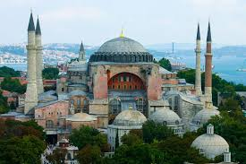
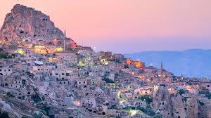
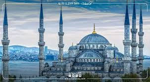
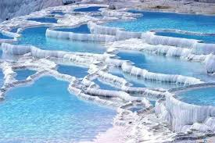

معلم تاريخي شهير في إسطنبول وكان كنيسة ثم مسجداً ثم متحفاً.
Ayasofya İstanbul’un en önemli tarihi yapılarından biridir.

منطقة طبيعية فريدة تشتهر بالمناطيد الهوائية والصخور البركانية.
Kapadokya balon turları ve eşsiz kaya oluşumlarıyla ünlüdür.

مسجد تاريخي جميل في إسطنبول يتميز بالبلاط الأزرق المميز.
Sultanahmet Camii mavi çinileri ile ünlüdür.

موقع طبيعي مشهور بالمدرجات البيضاء والينابيع الساخنة.
Pamukkale beyaz traverten teraslarıyla ünlüdür.